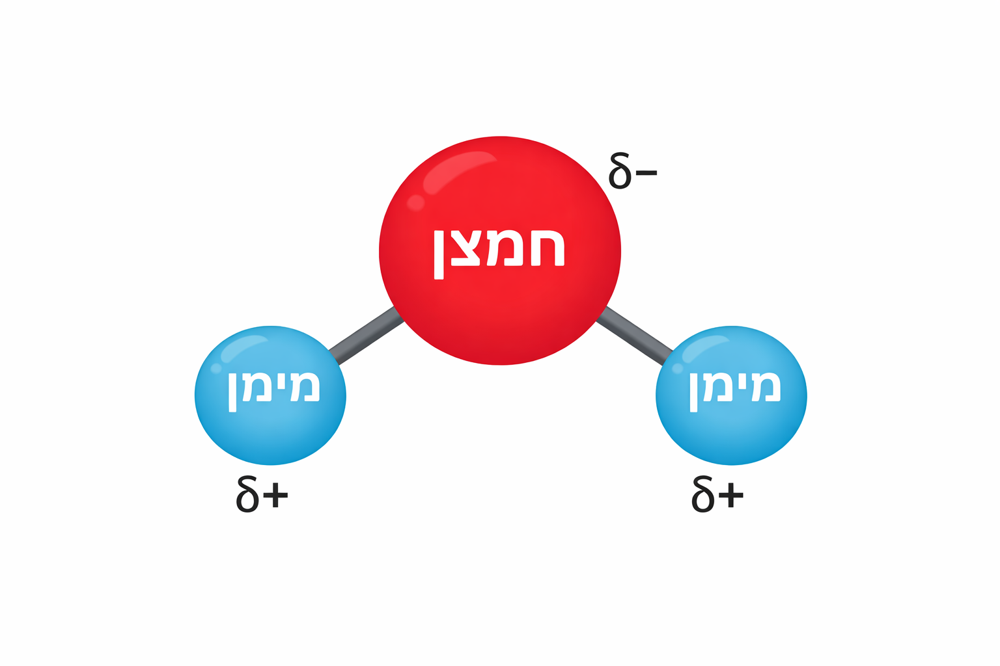
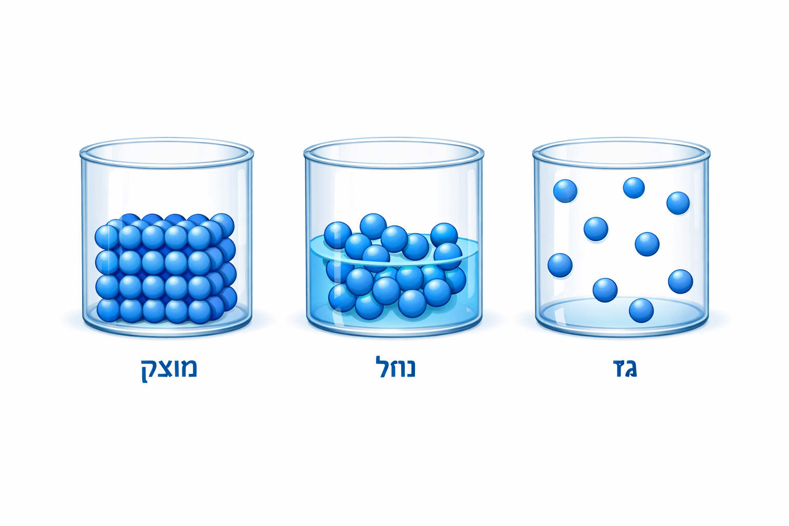

מטרות למידה
- להסביר שחומר הוא כל דבר בעל מסה ונפח.
- להבדיל בין מוצק, נוזל וגז לפי תנועת החלקיקים.
- לתאר כיצד טמפרטורה משפיעה על תנועת החלקיקים.
מילון מושגים
- מסה
- נפח
- אטום
- מולקולה
- חלקיקים
- מצבי צבירה
- מוצק, נוזל, גז
- טמפרטורה
בדיקה מהירה
- מה ההבדל בין מסה לנפח?
- מה קורה לחלקיקים כשמחממים חומר?
- איזה מצב צבירה שומר על צורה ונפח קבועים?
הקדמה
חומר הוא כל דבר בעל מסה ותופס נפח. מסה היא כמות החומר שיש בגוף, ונפח הוא המקום שהגוף תופס במרחב. לדוגמה: בקבוק מים מלא "שוקל" יותר מבקבוק ריק כי יש בו יותר מסה, והבקבוק עצמו תופס נפח קבוע על המדף.
החומר בנוי מחלקיקים זעירים: אטומים ומולקולות. האטום הוא יחידת הבנייה הקטנה של חומר, ומולקולה היא קבוצת אטומים שמחוברים יחד. לדוגמה, מולקולת מים (H2O) מורכבת משני אטומי מימן ואטום חמצן אחד.
החלקיקים נמצאים בתנועה מתמדת ומושכים זה את זה. הטמפרטורה משפיעה על התנועה שלהם – חימום גורם להם לנוע מהר יותר וקירור מאט אותם.
מסה ונפח
מסה = כמה חומר יש. נפח = כמה מקום הוא תופס.
יותר מסה באותו נפח מרגישה "כבדה" יותר.
אטום
אטום הוא החלקיק הבסיסי שמרכיב כל חומר.

מולקולה
מולקולה היא כמה אטומים שמחוברים יחד ויוצרים חומר מסוים.
ישנם שלושה מצבי צבירה נפוצים:
- מוצק: לחומר צורה ונפח קבועים. החלקיקים ארוזים בצפיפות ורועדים במקום.
- נוזל: לחומר נפח קבוע אך לא צורה קבועה. החלקיקים קרובים זה לזה אך יכולים להחליק אחד על השני ולכן הנוזל מקבל את צורת הכלי.
- גז: אין לחומר צורה או נפח קבועים. החלקיקים רחוקים זה מזה ומתפזרים כדי למלא את החלל הנתון.
העמקה: מה קובע את מצב הצבירה?
מצב הצבירה נקבע על‑ידי איזון בין אנרגיית תנועה (כמה מהר החלקיקים זזים) של החלקיקים לבין כוחות המשיכה (כמו "חיבוק" בין חלקיקים שמקרב אותם) ביניהם. אפשר לחשוב על זה כך: כשהחלקיקים "נמרצים" (חמים) הם מצליחים להתרחק זה מזה ונוצר גז, וכשהם "רגועים" (קרים) הם נשארים קרובים ונוצר מוצק או נוזל.
- אנרגיית תנועה: כמה "זריזים" החלקיקים. דוגמה: מים רותחים — החלקיקים קופצים מהר יותר ולכן קל להם להפוך לאדים.
- כוחות משיכה: הכוח שמחזיק חלקיקים קרוב. דוגמה: בקרח הכוחות חזקים יותר ולכן הוא שומר על צורה.
- חוזק משיכה: כמה חזק ה"חיבוק" בין החלקיקים. דוגמה: אם הכוחות חזקים, צריך הרבה חום כדי לשחרר אותם ולהפוך לגז.
- דחיסות (כמה אפשר "ללחוץ" חומר): דוגמה — אוויר במזרן מתכווץ כשמתיישבים עליו, אבל אבן כמעט לא מתכווצת.
- התפזרות (דיפוזיה) (חלקיקים שמתערבבים לבד): דוגמה — בושם שמתפשט בחדר.
על פי אתר האגודה האמריקאית לכימיה, תלמידים לומדים שמצבי הצבירה נובעים מהמשיכה והתנועה של האטומים והמולקולות; חימום וקירור משפיעים על המהירות והתנועה שלהם.
המחשות
להמחשה תוכלו לצפות בסרטונים ובאנימציות המראים את תנועת החלקיקים במצבי הצבירה השונים. קישור לדוגמה: סימולציות של תנועת חלקיקים.
ניסוי פשוט: מלאו כוס מים והכניסו אותה למקפיא למשך מספר שעות. כאשר המים קופאים הם הופכים למוצק – הנפח גדל מעט והצורה הופכת קבועה. חימום מחדש יותיר מים נוזליים, וחימום נוסף ייצור אדי מים (גז).
